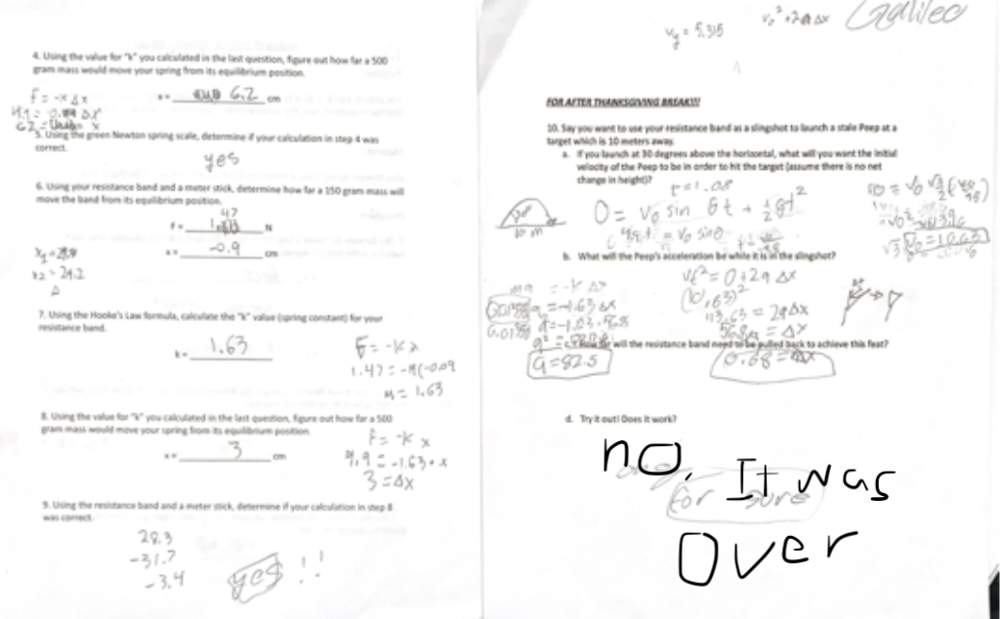

Galileo, Jackson, Tori, Yona
3-14-24
(graphics are a work in progress)
Our goal with this lab was to learn more about Hooke's law, and in doing so practice our knowledge of Kinematics and Newton's Laws, and we did this by calculating the spring constant for a resistance band, and then using the spring constant in conjuntion with our knowledge of Kinematics and Newton's laws, we calculated how far a certain object(a peep) would have to be pulled to launch it 10 meters at 30 degree initial. Our hypothesis was that it needed to be pulled back 0.68m assuming that the spring constant was 1.63.
The equations we used were x=V0sin(theta)t+1/2gt^2 and Vf^2=V0^2+2a(x) from the original kinematic equations, newton's F=ma, and hookes law which is that F = -k(x), and the 1d kinematics x=v0cos(theta)t
After mathing and peeping
As seen in the calculations, our hypothesis was incorrect and the peep went too far and hit the ceiling.
Possible errors could include measuring the launch angle and keeping it steady for launch, there also could have been an error in how far we pulled the resistance band to launch, or even the way we launched it, and lastly, our resistance band broke at some point which could have changed the spring constant. In order to fix these we would need to rething a way of sling shotting the peep, perhaps by placing it between to parallel bars and pulling our distance at an angle rather than propping up a meter stick and launching the peep along the legnth of it. We also could have measured the spring constant more rigorously.
In conclusion, our hypothesis that 0.68m of pull back at 30 degrees would launch the peep 10 meters was incorrect and something caused the peep to go way too far. Knowing how to properly measure and apply spring constants has applications in archery, bridges, and trampolines